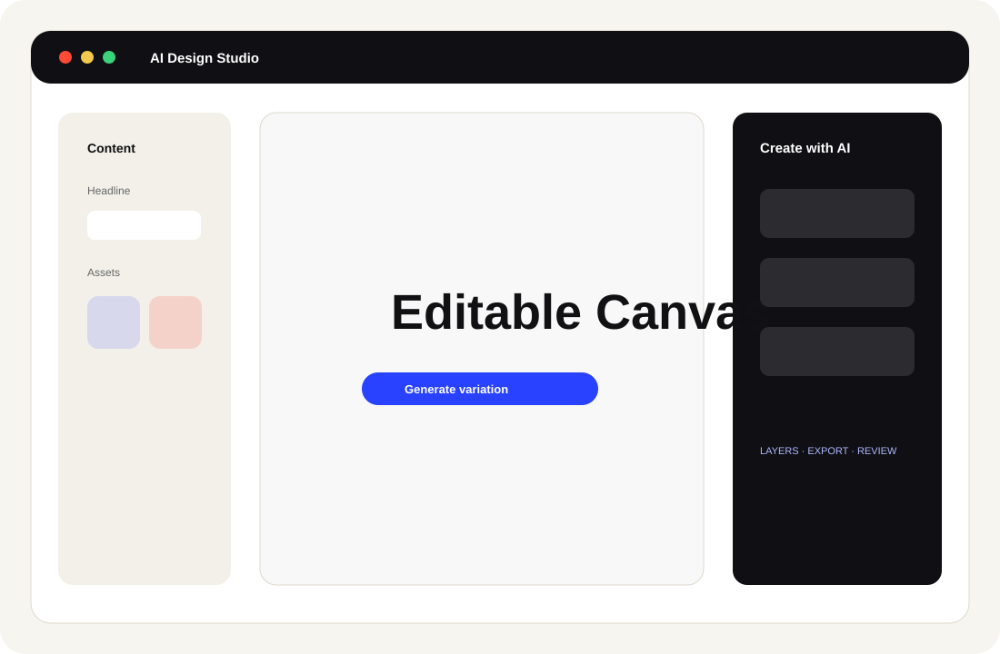
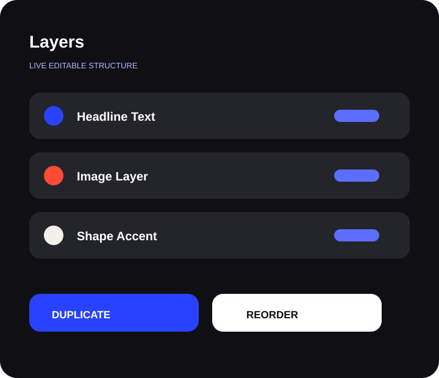
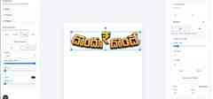
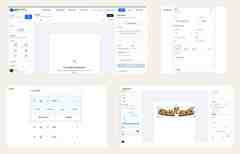

Editable Output
Generated compositions remain adjustable after creation instead of becoming locked flat images.
An editable AI-assisted creative workspace built around real production teams — where AI speeds up creation, but designers keep control of every layer, layout and final export.

WORKFLOW SYSTEMMost AI tools produce a flat final creative, but real teams need editable text, image, layout and review control.
Designers move between prompts, references, editing apps, feedback loops and export tools, slowing production.
Campaign and communication teams need speed, but cannot compromise consistency, hierarchy or quality control.
Generated compositions remain adjustable after creation instead of becoming locked flat images.
Users can manage hierarchy, visibility, position, duplication and structured design elements.
Prompts, variation generation and refinement support the designer rather than replacing judgement.
Preview and export logic connects first direction to final delivery, review and release needs.
The case study now shows the product as a connected design environment: canvas generation, layer hierarchy, transform controls, typography settings and refinement/export thinking.


The page focuses on what recruiters need to understand quickly: this is not only AI image generation; it is a designer-facing production system with canvas, layers, controls, refinement and export thinking.

The project evolved from local design planning and editable canvas composition to variation selection, refinement workflows, persistence, authentication, remote storage and production-provider integration. The direction connects product design, UI/UX, creative operations and AI-assisted development.